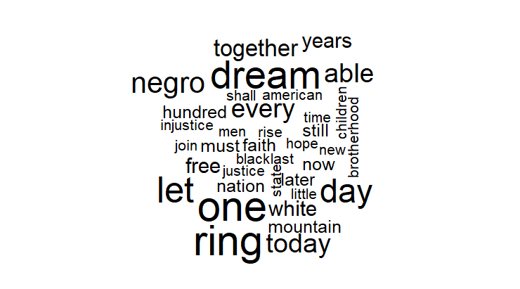

Assignments
Final Project
Final Paper
Presentation Slides
Assignment #1
ANALYZE SURVEY
a-c: The questions on the survey are relatively simple and non complex. Given that they relate to movie rentals they are particular to this topic. They begin with multiple choice/ranking questions and then are set up with multiple choice questions, but for the most part questions that are strictly qualitative.
Personally, my only criticism involves design. The questions seem long and from a survey design perspective not intuitive for mobile users.
d,3-7: The survey is fairly intuitive and does not need editing, it does not deviate much from pre-existing surveys. Adding the UTD logo personalizes it to the university which makes it useful for UTD users.
FURTHER ASSIGNMENT
1-4: Inserting this block questions allows for the introduction of multiple questions at a time, assuming these blocks are preexisting they create an easier survey experience.
Assignment #2
The difference between the two programs comes down to intuition. If the purpose is to visualize data from a non social science research perspective GTrends is much better at doing this. However, if the goal is to both analyze and perform research the gtrends package is much better.
It would be interesting to perform an analysis importing the csv from google versus using the gtrends package.
Assignment #3
3a.: The Biden-Xi analysis allows for an understanding of what is going on within United States international relations and what revolves around the conversation. Terms like coronavirus and fentanyl stand out, because of the controversy surrounding COVID-19, as well as the flow of fentanyl into the United States that is in part due to the drug coming from the souther border being of Chinese origin. In addition to the aforementioned terms it is important to note the role of human rights and the tension between rising Chinese hegemony and the United States hegemonic position being challenged by it. Since the U.S. represents Western Liberal democratic order it is possible to see how human rights ties into the crises involving both Tibetans and Uyghers in China.
3b.: Looking over time, it is important to note that at least within the plot there is very little change in the use of the term “american” and this is very similar to the the use of the word “people”. Across time, these terms do not look like they change across time. There are however a couple of anomalies within the plot - The Trump 2017 speach being one of these instances, where his use of the term “american” is greater than everybody else. An explanation for this may be due to his populist platform that appeases to his voter base. A similar thing is found with people in both Johnson and Nixon regarding people, but a qualitative analysis may be necessary to know why they used these terms to the extent they did. For analyses regarding ideology it would be interesting to do a similar analysis between the term “communist” and “socialist” - I attempted an analysis and was not able to get a plot for it.
Assignment #5
- There were issues in my ability to access this data. However, listed below is what it looked like. As you can tell there is an original ID and secret. Issues regarding third-party apps made it difficult to continue to the data analysis portion of the assignment.
\# = Autenthication = \# \# \# yt_oauth("207302960577-7uqd83qilb3586f0dj77p2h4hq06kjs0.apps.googleusercontent.com","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", token = "")
yt_israelprotest = yt_search(term = "Israel protest")
# List of categories (region filter: US)
videocat_us= list_videocats(c(region_code = "us")) \# = Download and prepare data = \# mostpop = list_videos()
mostpop_us = list_videos(video_category_id = "25", region_code = "US", max_results = 10)
# Find the channel ID in the source page
# Alternatively, from get_video_details
# = Channel stats =
nbcnews_stat = get_channel_stats("UCeY0bbntWzzVIaj2z3QigXg") nbcnews_detail = get_video_details(video_id = "to0YqKKRIWY")
# = Videos =
curl::curl_version() httr::set_config(httr::config(http_version = 0)) \# Fix curl issue
nbc_videos1 = yt_search(term="", type="video", channel_id = "UCeY0bbntWzzVIaj2z3QigXg") nbc_videos = nbc_videos1 %\>% mutate(date = as.Date(publishedAt)) %\>% filter(date \> "2022-11-27") %\>% arrange(date) samplecomment = get_comment_threads(c(video_id = "to0YqKKRIWY"), max_results = 600) samplecomment2 = get_all_comments(c(video_id = "to0YqKKRIWY"), max_results = 600) \# = Comments, may take a long time \# nbc_comments = lapply(as.character(nbc_videos1\$video_id), function(x){ get_comment_threads(c(video_id = x), max_results = 101) }) a. An analysis of CNN would be the following. Keeping all things the same, except the channel ID.
# = Autenthication = #
#
#
yt_oauth("207302960577-7uqd83qilb3586f0dj77p2h4hq06kjs0.apps.googleusercontent.com","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", token = "")
yt_israelprotest = yt_search(term = "Israel protest")
# List of categories (region filter: US)
videocat_us= list_videocats(c(region_code = "us"))
# = Download and prepare data = #
mostpop = list_videos()
mostpop_us = list_videos(video_category_id = "25", region_code = "US", max_results = 10)
# Find the channel ID in the source page
# Alternatively, from get_video_details
# = Channel stats = #
cnn_stat = get_channel_stats("UCeY0bbntWzzVIaj2z3QigXg")
cnn_detail = get_video_details(video_id = "to0YqKKRIWY")
# = Videos = #
curl::curl_version()
httr::set_config(httr::config(http_version = 0)) # Fix curl issue
cnn_videos1 = yt_search(term="", type="video", channel_id = "UCeY0bbntWzzVIaj2z3QigXg")
cnn_videos = nbc_videos1 %>%
mutate(date = as.Date(publishedAt)) %>%
filter(date > "2022-11-27") %>%
arrange(date)
samplecomment = get_comment_threads(c(video_id = "to0YqKKRIWY"), max_results = 600)
samplecomment2 = get_all_comments(c(video_id = "to0YqKKRIWY"), max_results = 600)
# = Comments, may take a long time #
cnn_comments = lapply(as.character(nbc_videos1$video_id), function(x){
get_comment_threads(c(video_id = x), max_results = 101)
})- I can potentially use quanteda, but given the difficulty accessing third party apps it does not seem possible. It would be interesting to see a data scientist analyzing their own child do this.
Assignment #6
- These are the wordclouds from the rscript textmining and the code used
\# Data Method: Text mining \# File: textmining1.R \# Theme: Download text data from web and create wordcloud
# Install the easypackages package
install.packages("easypackages") library(easypackages)
# Download text data from website
mlkLocation \<-URLencode("http://www.analytictech.com/mb021/mlk.htm")
# use htmlTreeParse function to read and parse paragraphs
doc.html\<- htmlTreeParse(mlkLocation, useInternal=TRUE) mlk \<- unlist(xpathApply(doc.html, '//p', xmlValue)) mlk head(mlk, 3)
# Vectorize mlk
words.vec \<- VectorSource(mlk)
# Check the class of words.vec
class(words.vec)
# Create Corpus object for preprocessing
words.corpus \<- Corpus(words.vec) inspect(words.corpus)
# Turn all words to lower case
words.corpus \<- tm_map(words.corpus, content_transformer(tolower))
# Remove punctuations, numbers
words.corpus \<- tm_map(words.corpus, removePunctuation) words.corpus \<- tm_map(words.corpus, removeNumbers)
# How about stopwords, then uniform bag of words created
words.corpus \<- tm_map(words.corpus, removeWords, stopwords("english"))
# Create Term Document Matrix
tdm \<- TermDocumentMatrix(words.corpus) inspect(tdm)
m \<- as.matrix(tdm) wordCounts \<- rowSums(m) wordCounts \<- sort(wordCounts, decreasing=TRUE) head(wordCounts)
# Create Wordcloud
cloudFrame\<-data.frame(word=names(wordCounts),freq=wordCounts)
set.seed(1234) wordcloud(cloudFrame$word,cloudFrame$freq) wordcloud(names(wordCounts),wordCounts, min.freq=3,random.order=FALSE, max.words=500,scale=c(3,.5), rot.per=0.35,colors=brewer.pal(8,"Dark2"))

The following is from the Winston Churchill speech, code and images
\# Download text data from website wcLocation \<-URLencode("http://www.historyplace.com/speeches/churchill-hour.htm")
# use htmlTreeParse function to read and parse paragraphs
doc.html\<- htmlTreeParse(wcLocation, useInternal=TRUE) wc \<- unlist(xpathApply(doc.html, '//p', xmlValue)) wc head(wc, 3)
# Vectorize wc
words.vec \<- VectorSource(wc)
# Check the class of words.vec
class(words.vec)
# Create Corpus object for preprocessing
words.corpus \<- Corpus(words.vec) inspect(words.corpus)
# Turn all words to lower case
words.corpus \<- tm_map(words.corpus, content_transformer(tolower))
# Remove punctuations, numbers
words.corpus \<- tm_map(words.corpus, removePunctuation) words.corpus \<- tm_map(words.corpus, removeNumbers)
# How about stopwords, then uniform bag of words created
words.corpus \<- tm_map(words.corpus, removeWords, stopwords("english"))
# Create Term Document Matrix
tdm \<- TermDocumentMatrix(words.corpus) inspect(tdm)
m \<- as.matrix(tdm) wordCounts \<- rowSums(m) wordCounts \<- sort(wordCounts, decreasing=TRUE) head(wordCounts)
# Create Wordcloud
cloudFrame\<-data.frame(word=names(wordCounts),freq=wordCounts)
set.seed(1234) wordcloud(cloudFrame$word,cloudFrame$freq) wordcloud(names(wordCounts),wordCounts, min.freq=3,random.order=FALSE, max.words=500,scale=c(3,.5), rot.per=0.35,colors=brewer.pal(8,"Dark2")) \~\~\~Code for running rvest01
## Workshop: Scraping webpages with R rvest package \# Prerequisites: Chrome browser, Selector Gadget
#install.packages("tidyverse") library(tidyverse) #install.packages("rvest") library(rvest)
url \<- 'https://en.wikipedia.org/wiki/List_of_countries_by_foreign-exchange_reserves' #Reading the HTML code from the Wiki website wikiforreserve \<- read_html(url) class(wikiforreserve)
## Get the XPath data using Inspect element feature in Safari, Chrome or Firefox
\## At Inspect tab, look for
<table class=....>
tag. Leave the table close \## Right click the table and Copy XPath, paste at html_nodes(xpath =)
foreignreserve \<- wikiforreserve %\>% html_nodes(xpath='//\*[@id="mw-content-text"]/div/table\[1\]') %\>% html_table() class(foreignreserve) fores = foreignreserve\[\[1\]\]
names(fores) \<- c("Rank", "Country", "Forexres", "Date", "Change", "Sources") colnames(fores)
head(fores\$Country, n=10)
## Clean up variables
## What type is Rank?
## How about Date?
# Remove trailing notes in Date variable
library(stringr) fores$newdate = str_split_fixed(fores$Date, "\\\[", n = 2)\[, 1\]
write.csv(fores, "fores.csv", row.names = FALSE) \~\~\~Image of csv “Fores”
Script rvest02
## Workshop: Scraping webpages with R rvest package \# Prerequisites: Chrome browser, Selector Gadget
# install.packages("tidyverse")
library(tidyverse) \# install.packages("rvest") url1 = "https://www.imdb.com/search/title/?release_date=2022-01-01,2023-01-01" imdb2022 \<- read_html(url1) rank_data_html \<- html_nodes(imdb2022,'.text-primary') rank_data \<- as.numeric(html_text(rank_data_html)) head(rank_data, n = 10) title_data_html \<- html_nodes(imdb2022,'.lister-item-header a') title_data \<- html_text(title_data_html)
head(title_data, n =20)The difficulty of this is that I am unsure as to how to make this visual.
Assignment #7
- Code for first part of govdata with output
## Scraping Government data
## Website: GovInfo (https://www.govinfo.gov/app/search/)
## Prerequisite: Download from website the list of files to be downloaded
## Designed for background job
# Start with a clean plate and lean loading to save memory
gc(reset=T)
rm(list = ls())
#install.packages(c("purrr", "magrittr")
install.packages("purr")
install.packages("magrittr")
library(purrr)
library(magrittr)
## Set path for reading the listing and home directory
## For Windows, use "c:\\directory\\subdirectory"
library(readr)
govfiles= read_csv("govinfo-search-results-2023-12-05T16_37_50.csv")
View(govfiles)
# Directory to save the pdf's
save_dir <- "C:\\epps6302\\pdf"
# Function to download pdfs
download_govfiles_pdf <- function(url, id) {
tryCatch({
destfile <- paste0(save_dir, "govfiles_", id, ".pdf")
download.file(url, destfile = destfile, mode = "wb") # Binary files
Sys.sleep(runif(1, 1, 3)) # Important: random sleep between 1 and 3 seconds to avoid suspicion of "hacking" the server
return(paste("Successfully downloaded:", url))
},
error = function(e) {
return(paste("Failed to download:", url))
})
}
# Download files, potentially in parallel for speed
# Simple timer, can use package like tictoc
start.time <- Sys.time()
message("Starting downloads")
results <- 1:length(pdf_govfiles_url) %>%
purrr::map_chr(~ download_govfiles_pdf(pdf_govfiles_url[.], pdf_govfiles_id[.]))
message("Finished downloads")
end.time <- Sys.time()
time.taken <- end.time - start.time
time.taken
# Print results
print(results)118th Congress Congressional Hearings in Committee on Foreign Affairs csv
A main issue with the parallel R file is the issue of cores and difficulty with overcoming this and constantly receiving and error. Code Below and output as well
## Parallelization
## Prerequisite: Multiple core on CPU
# Load the parallel package
library(parallel)
library(pdftools)
# Create a function to be applied in parallelizing later jobs
read_pdf_to_text <- function(uri) {
text <- pdftools::pdf_text(uri)
return(text)
}
# For mac
pdf_texts <- mclapply(pdfpath, read_pdf_to_text, mc.cores = num_cores)
toc()
## For all platforms
# Load the parallel package
library(parallel)
library(pdftools)
# Get the number of cores available on your machine
num_cores <- detectCores()
# Initialize a cluster with the number of available cores
cl <- makeCluster(num_cores)
# Load libraries and functions in each cluster
clusterEvalQ(cl, library(pdftools))
# Define the function to be parallelized after making the clusters
read_pdf_to_text <- function(uri) {
text <- pdftools::pdf_text(uri)
return(text)
}
# Export any libraries or objects that will be used within the parallel code
# Perform the parallel computation
tic()
pdf_texts <- parLapply(cfa_ch, read_pdf_to_text, mc.cores = num_cores)
toc()
# Don't forget to stop the cluster
stopCluster(cl)Assignment #8
- A couple of observations regarding setting up the census data key. First, it is a relative simple process. However, the second, it is much faster if one does not use an .edu email.
My key is: 311dcd5892541c0eaa28747e5024f1e308c5xxxx
- Below are 2019 and 2009 codes and images. Although the assignment asks for 2020, this is not available.
# Get a list of American Community Survey (ACS) 2019 variables
acs19 = tidycensus::load_variables(2019, "acs5", cache = TRUE)
acs19_Profile = load_variables(2019 , "acs5/profile", cache = TRUE)
us_median_age19 <- get_acs(
geography = "state",
variables = "B01002_001",
year = 2019,
survey = "acs1",
geometry = TRUE,
resolution = "20m"
) %>%
shift_geometry()
plot(us_median_age19$geometry)
ggplot(data = us_median_age19, aes(fill = estimate)) +
geom_sf(col="white") + # Why color is white?
theme_bw() +
scale_fill_distiller(palette = "PuBuGn", # Try other palette?
direction = 1) +
labs(title = " Median Age by State, 2019",
caption = "Data source: 2019 1-year ACS, US Census Bureau",
fill = "", family="Palatino") +
theme(legend.position=c(.08,.6), legend.direction="vertical") +
theme(text = element_text(family = "Palatino"), plot.title = element_text(hjust = 0.5))
# Get a list of American Community Survey (ACS) 2009 variables
acs09 = tidycensus::load_variables(2009, "acs5", cache = TRUE)
acs09_Profile = load_variables(2009 , "acs5/profile", cache = TRUE)
us_median_age09 <- get_acs(
geography = "state",
variables = "B01002_001",
year = 2009,
survey = "acs1",
geometry = TRUE,
resolution = "20m"
) %>%
shift_geometry()
plot(us_median_age09$geometry)
ggplot(data = us_median_age09, aes(fill = estimate)) +
geom_sf(col="green") + # Why color is white?
theme_bw() +
scale_fill_distiller(palette = "PuBuGn", # Try other palette?
direction = 1) +
labs(title = " Median Age by State, 2009",
caption = "Data source: 2009 1-year ACS, US Census Bureau",
fill = "", family="Palatino") +
theme(legend.position=c(.08,.6), legend.direction="vertical") +
theme(text = element_text(family = "Palatino"), plot.title = element_text(hjust = 0.5))- There are states where we can observe age go up such as Nevada, Arizona, and New Mexico. We see a very similar trend in Puerto Rico. This may be due to the retirees heading to these locations.